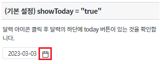
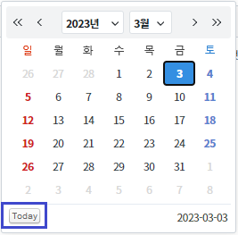
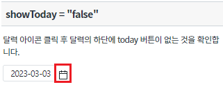
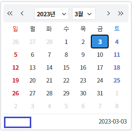
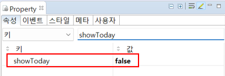
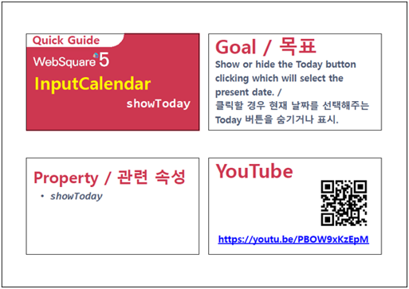

달력 아이콘을 클릭하여 달력을 표시할 경우, 달력 상에 Today 버튼이 함께 표시됩니다. Today 버튼을 클릭하면 현재 날짜를 선택할 수 있습니다. 이 기능은 아래의 속성으로 사용할 수 있습니다. - showToday : Today 버튼의 표시 또는 비표시
속성 'showToday'의 값에 의해 Today 버튼을 표시하기
속성 'showToday'의 값에 의해 Today 버튼을 비표시하기
달력 모양의 아이콘을 클릭합니다.
[브라우저(Chrome) 실행 예시]

Today 버튼이 표시되어 있는 것을 확인합니다.
[브라우저(Chrome) 실행 예시]

달력 모양의 아이콘을 클릭합니다.
[브라우저(Chrome) 실행 예시]

Today 버튼이 비표시되어 있는 것을 확인합니다.
[브라우저(Chrome) 실행 예시]

InputCalendar의 속성을 정의합니다.
[필수] showToday="false" //[default:true, false] 기본 설정 값은 "true"고 달력에 Today버튼을 표시한다. 옵션을 "false"로 수정하면 버튼을 비표시한다.
그림 1.웹스퀘어5 SP5 스튜디오의 Property View(속성창) 예시

<!-- inputCalendar 의 소스 본문 예시 --> <w2:inputCalendar showToday="false" id="ica_exam_2"> </w2:inputCalendar>
showToday
[웹스퀘어5 SP5 개발 가이드] InputCalendar
링크 : https://docs1.inswave.com/sp5_user_guide#82bd8b117b294ca9
[웹스퀘어5 SP5 개발 가이드] InputCalendar Today버튼 숨기기/표시하기
링크 : https://docs1.inswave.com/sp5_user_guide#7ec662422d3da557
InputCalendar Today버튼 숨기기/표시하기
링크 : https://youtu.be/PBOW9xKzEpM
